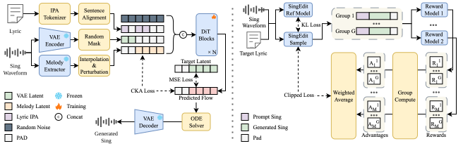

YingMusic-Singer: Controllable Singing Voice Synthesis with Flexible Lyric Manipulation and
Annotation-free Melody Guidance
Anonymous submission to Interspeech 2026
Abstract
Regenerating singing voices with altered lyrics while preserving melody consistency remains challenging, as existing methods either offer limited controllability or require laborious manual alignment. We propose YingMusic-Singer, a fully diffusion-based model enabling melody-controllable singing voice synthesis with flexible lyric manipulation. The model takes three inputs: an optional timbre reference, a melody-providing singing clip, and modified lyrics, without manual alignment. Trained with curriculum learning and Group Relative Policy Optimization, YingMusic-Singer achieves stronger melody preservation and lyric adherence than Vevo2, the most comparable baseline supporting melody control without manual alignment. We also introduce LyricEditBench, the first benchmark for melody-preserving lyric modification evaluation. Code, weights, and the benchmark will be publicly released, with demos available at https://anonymous.4open.science/w/YingMusic-Singer.

Melody Control
The model should preserve the melody from the Original Melody, match the timbre of the Timbre Reference, and faithfully render the Modified Lyrics.
| Original Language | Edit Task | Original Melody | Timbre Reference | Original Lyrics | Modified Lyrics | Vevo[1] | Ours |
|---|---|---|---|---|---|---|---|
| ZH | Task 1 | Original lyrics here | Modified lyrics here | ||||
| EN | Task 2 | 一起走过的春天里 | 一起走过的夏天里 |
Ethics Statement
YingMusic-Singer enables the creation of singing voices with modified lyrics, supporting applications in artistic creation and entertainment. Potential risks include unauthorized voice cloning and copyright infringement. To ensure responsible deployment, users should obtain consent for voice usage, disclose AI involvement, and verify musical originality.
Reference
[1] X. Zhang, J. Zhang, Y. Wang, C. Wang, Y. Chen, D. Jia, Z. Chen, and Z. Wu, “Vevo2: A unified and controllable framework for speech and singing voice generation,” CoRR, vol.abs/2508.16332, 2025.